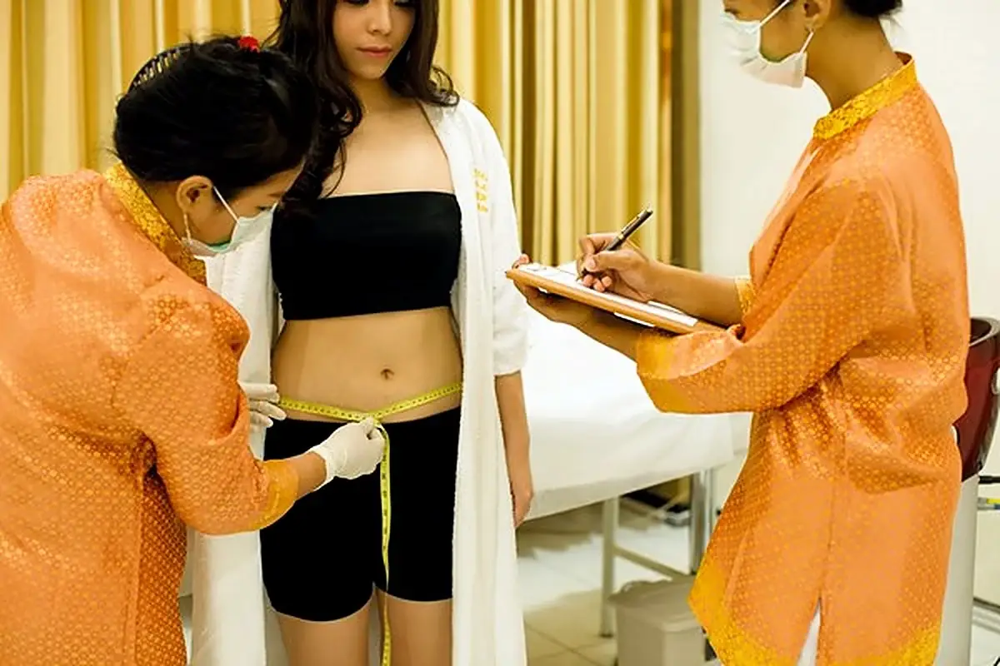

Complementary Therapies Unit
Medical Ozone
Therapy.
Medical ozone (O₃) is delivered to the body along with oxygen, through the skin, muscles or blood, to: treat inflammation, pain, viruses, bacteria, candida and parasites.
Therapeutic concentration of O₃
0,05% – 0,5%
Working window
Q‑Life Approach
One natural modality to support faster recovery and healing.
Medical Ozone Therapy uses the controlled oxidative properties of Ozone to stimulate healing, improve tissue oxygenation, and support detoxification.
The route of administration is selected to suit the condition and treatment goals.
Medical Ozone Therapy is complementary care. It supports—but does not replace—your medical examinations and ongoing treatment.
Nine delivery routes
One therapy, nine delivery routes.





Understand the approach
How it works in the body.
At the right dose and method, Ozone triggers an adaptive response: improving tissue oxygenation, activating antioxidant enzymes, and suppressing microbes: so that recovery occurs more efficiently.
Tissue oxygenation
Ozone increases oxygen release to tissues, supporting better cellular metabolism.
Antioxidant activation
Mild, controlled oxidative stress activates the body's antioxidant enzyme system.
Suppresses microbes
Ozone's oxidative properties help suppress bacteria, viruses, and fungi in the therapeutic environment.
Regulating inflammation and relieving pain
Helps regulate inflammatory responses and relieve pain according to each patient's condition and medical evaluation.
This general description is not a diagnosis or guarantee of individual results. Each patient's response is different and is evaluated clinically.
Therapy documentation
Therapy under professional supervision.


Clinical protocol
Care plans should not be based on self-diagnosis.
The method, dose, and appropriateness of therapy are determined after consultation and evaluation by the medical team. The following flow keeps therapy safe and appropriate to your condition.
- Initial historyThe history of the condition and goals of treatment are discussed first with the doctor.
- Selected methodRoute of administration and dosage are adjusted according to medical considerations.
- MonitoringPatient response and comfort are noted during and after therapy.
Scope of information
Why discussing your condition with a doctor matters.
- High cholesterol / Dyslipidemia
- Heart & blood vessels (hypertension, coronary heart disease, stroke)
- Diabetes mellitus & complications (gangrene, kidney failure)
- Cancer & side effects of chemotherapy / radiation
- Ovarian cyst
- Breast cysts / tumors
- Obesity
- Allergies
- Shortness of breath / Asthma / COPD
- Rheumatism
- Hepatitis / viral disease
- Migraines, headaches
- Vertigo
- Insomnia
- Autoimmune disease
- Anti-aging / anti-aging

Start with consultation
Discuss your condition with the Q-Life medical team.
Consult your condition and treatment goals to determine the appropriate sequence of therapy.